Candidate List 20251219 Previous Day Next Day Section 1: New Sources (age<1d) Cosmological Afterglow
Section 2: Old (1-5d) sources observed last night placeholder
Section 1: New Afterglow/FBOT Cands Last Night (5)
1. ZTF25aciytii (FBOT?) [Back to Top] [Share] [Trigger Swift] [Fritz ] [Lasair ]RA, Dec: 36.37911, 28.68978 2h25m30.99s, 28d41m23.20sGalactic (l, b): 146.72369, -29.79928 ext(g-r) = 0.108LegacySurvey: 1 sources in 3 arcsec Closest: d = 1.52 arcsec, 36.8 deg (east of north) photoz=0.2 (68% bounds 0.14, 0.28), type=EXP peak abs mag = -21.04 (68% bounds -20.16, -21.88)
2. ZTF25acizgnq (Afterglow?) [Back to Top] [Share] [Trigger Swift] [Fritz ] [Lasair ]RA, Dec: 18.52585, 56.11321 1h14m6.20s, 56d 6m47.55sGalactic (l, b): 126.10887, -6.61866 ext(g-r) = 0.554 Consistent with synchrotron, g-r>0!
3. ZTF25aciziky (Afterglow?) [Back to Top] [Share] [Trigger Swift] [Fritz ] [Lasair ]RA, Dec: 24.64796, 62.69591 1h38m35.51s, 62d41m45.28sGalactic (l, b): 128.30936, 0.31752 ext(g-r) = 1.424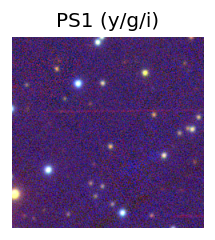 Consistent with synchrotron, g-r>0!
4. ZTF25acjbggb (Afterglow?FBOT?) [Back to Top] [Share] [Trigger Swift] [Fritz ] [Lasair ]RA, Dec: 159.17754, 27.00167 10h36m42.61s, 27d 0m6.01sGalactic (l, b): 205.32484, 60.09811 ext(g-r) = 0.02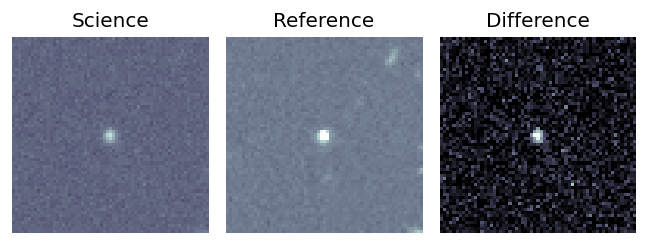peak abs mag = -21.06 LegacySurvey: 1 sources in 3 arcsec Closest: d = 0.17 arcsec, 177.0 deg (east of north) photoz=0.27 (68% bounds 0.22, 0.34), type=SER peak abs mag = -20.43 (68% bounds -19.97, -21.04) Consistent with synchrotron, g-r>0!
5. ZTF25acjbnml (Afterglow?) [Back to Top] [Share] [Trigger Swift] [Fritz ] [Lasair ]RA, Dec: 158.19676, 15.84345 10h32m47.22s, 15d50m36.42sGalactic (l, b): 225.08534, 55.96616 ext(g-r) = 0.042LegacySurvey: 1 sources in 3 arcsec Closest: d = 0.08 arcsec, 349.0 deg (east of north) photoz=0.02 (68% bounds 0.01, 0.07), type=EXP peak abs mag = -14.52 (68% bounds -13.26, -17.48) Consistent with synchrotron, g-r>0!
Section 2: Older Sources Observed Last Night (42)
0. ZTF25achefca (Afterglow?FBOT?) [Back to Top] [Share] [Trigger Swift] [Fritz ] [Lasair ]RA, Dec: 12.57458, 25.99487 0h50m17.90s, 25d59m41.54sGalactic (l, b): 122.61181, -36.87617 ext(g-r) = 0.043peak abs mag = -18.85 LegacySurvey: 1 sources in 3 arcsec Closest: d = 0.93 arcsec, 357.3 deg (east of north) photoz=0.07 (68% bounds 0.03, 0.24), type=SER peak abs mag = -19.57 (68% bounds -17.9, -22.46)
1. ZTF25achlrsy (Afterglow?) [Back to Top] [Share] [Trigger Swift] [Fritz ] [Lasair ]RA, Dec: 328.01797, 33.57245 21h52m4.31s, 33d34m20.83sGalactic (l, b): 85.28216, -15.88051 ext(g-r) = 0.15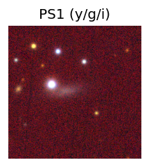 PS1: 1 source in 3 arcsec Closest: d = 4.70 arcsec photoz=0.06+/-0.01 peak abs mag = -19.38 Consistent with synchrotron, g-r>0!
2. ZTF25achqkvb (Afterglow?) [Back to Top] [Share] [Trigger Swift] [Fritz ] [Lasair ]RA, Dec: 10.82344, 41.23882 0h43m17.62s, 41d14m19.75sGalactic (l, b): 121.28529, -21.60689 ext(g-r) = 0.477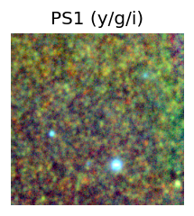 PS1: 1 source in 3 arcsec Closest: d = 2.27 arcsec photoz=0.43+/-0.00 peak abs mag = -26.46
3. ZTF25achxmlx (Afterglow?) [Back to Top] [Share] [Trigger Swift] [Fritz ] [Lasair ]RA, Dec: 221.61918, 14.3752 14h46m28.60s, 14d22m30.73sGalactic (l, b): 13.29904, 60.34074 ext(g-r) = 0.023LegacySurvey: 1 sources in 3 arcsec Closest: d = 0.76 arcsec, 153.0 deg (east of north) photoz=0.04 (68% bounds 0.03, 0.05), type=SER peak abs mag = -18.97 (68% bounds -18.34, -19.53)
4. ZTF25acidocd (Afterglow?) [Back to Top] [Share] [Trigger Swift] [Fritz ] [Lasair ]RA, Dec: 313.09659, 64.26261 20h52m23.18s, 64d15m45.39sGalactic (l, b): 100.33481, 12.48163 ext(g-r) = 0.574
5. ZTF25aciebze (FBOT?) [Back to Top] [Share] [Trigger Swift] [Fritz ] [Lasair ]RA, Dec: 344.05885, -21.2238 22h56m14.12s, -21d-13m-25.67sGalactic (l, b): 39.32158, -63.13473 ext(g-r) = 0.032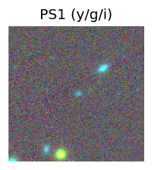 PS1: 1 source in 3 arcsec Closest: d = 0.65 arcsec photoz=0.28+/-0.21 peak abs mag = -22.03
6. ZTF25acihgad (FBOT?) [Back to Top] [Share] [Trigger Swift] [Fritz ] [Lasair ]RA, Dec: 92.84286, 66.9709 6h11m22.29s, 66d58m15.22sGalactic (l, b): 147.31061, 21.04417 ext(g-r) = 0.105LegacySurvey: 1 sources in 3 arcsec Closest: d = 0.27 arcsec, 89.1 deg (east of north) photoz=0.48 (68% bounds 0.17, 1.01), type=PSF peak abs mag = -22.28 (68% bounds -19.79, -24.26) Consistent with synchrotron, g-r>0!
7. ZTF25aciohap (Afterglow?FBOT?) [Back to Top] [Share] [Trigger Swift] [Fritz ] [Lasair ]RA, Dec: 158.94362, 17.6589 10h35m46.47s, 17d39m32.03sGalactic (l, b): 222.60172, 57.36089 ext(g-r) = 0.028peak abs mag = -19.61 LegacySurvey: 1 sources in 3 arcsec Closest: d = 2.24 arcsec, 50.5 deg (east of north) photoz=0.17 (68% bounds 0.15, 0.2), type=SER peak abs mag = -19.81 (68% bounds -19.55, -20.15)
8. ZTF25aciopbi (Afterglow?) [Back to Top] [Share] [Trigger Swift] [Fritz ] [Lasair ]RA, Dec: 163.19407, 32.91415 10h52m46.58s, 32d54m50.93sGalactic (l, b): 192.96144, 63.76381 ext(g-r) = 0.023LegacySurvey: 1 sources in 3 arcsec Closest: d = 3.68 arcsec, 266.1 deg (east of north) photoz=0.05 (68% bounds 0.04, 0.06), type=SER peak abs mag = -17.03 (68% bounds -16.71, -17.27) Consistent with synchrotron, g-r>0!
9. ZTF25acipmxl (FBOT?) [Back to Top] [Share] [Trigger Swift] [Fritz ] [Lasair ]RA, Dec: 5.9104, -1.45908 0h23m38.50s, -1d-27m-32.68sGalactic (l, b): 107.21595, -63.47949 WARNING: -3.69 deg from ecliptic plane ext(g-r) = 0.028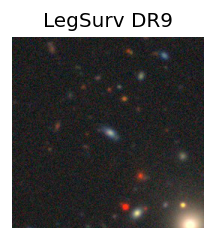 peak abs mag = -21.04 LegacySurvey: 1 sources in 3 arcsec Closest: d = 0.96 arcsec, 249.6 deg (east of north) photoz=0.16 (68% bounds 0.12, 0.24), type=SER peak abs mag = -20.95 (68% bounds -20.27, -21.87)
10. ZTF25aciprxa (FBOT?) [Back to Top] [Share] [Trigger Swift] [Fritz ] [Lasair ]RA, Dec: 14.32545, -2.4507 0h57m18.11s, -2d-27m-2.52sGalactic (l, b): 126.43642, -65.28254 ext(g-r) = 0.044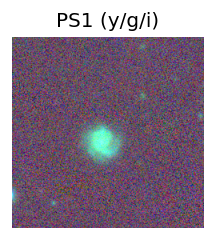 peak abs mag = -18.35 LegacySurvey: 1 sources in 3 arcsec Closest: d = 1.63 arcsec, 192.2 deg (east of north) photoz=0.15 (68% bounds 0.03, 0.52), type=EXP peak abs mag = -19.56 (68% bounds -16.04, -22.69) Consistent with synchrotron, g-r>0!
11. ZTF25aciwbsc (Afterglow?) [Back to Top] [Share] [Trigger Swift] [Fritz ] [Lasair ]RA, Dec: 173.23941, 47.49573 11h32m57.46s, 47d29m44.62sGalactic (l, b): 154.73018, 64.4976 ext(g-r) = 0.022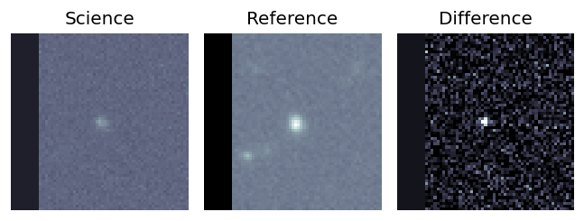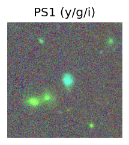 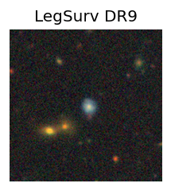 peak abs mag = -19.83 LegacySurvey: 1 sources in 3 arcsec Closest: d = 1.65 arcsec, 237.9 deg (east of north) photoz=0.16 (68% bounds 0.13, 0.19), type=SER peak abs mag = -19.23 (68% bounds -18.66, -19.59)
12. ZTF25acixnpb (FBOT?) [Back to Top] [Share] [Trigger Swift] [Fritz ] [Lasair ]RA, Dec: 8.71863, -8.78252 0h34m52.47s, -8d-46m-57.09sGalactic (l, b): 110.11112, -71.24081 ext(g-r) = 0.04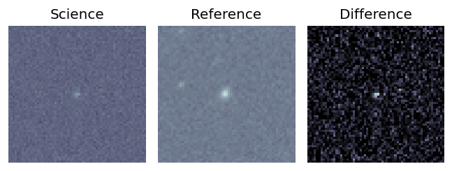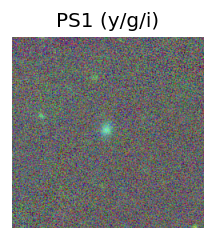 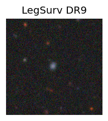 peak abs mag = -19.11 LegacySurvey: 1 sources in 3 arcsec Closest: d = 0.92 arcsec, 65.7 deg (east of north) photoz=0.14 (68% bounds 0.12, 0.17), type=EXP peak abs mag = -19.45 (68% bounds -18.99, -19.88)
13. ZTF25acixtya (FBOT?) [Back to Top] [Share] [Trigger Swift] [Fritz ] [Lasair ]RA, Dec: 351.2552, 17.945 23h25m1.25s, 17d56m41.99sGalactic (l, b): 95.59319, -40.29485 ext(g-r) = 0.057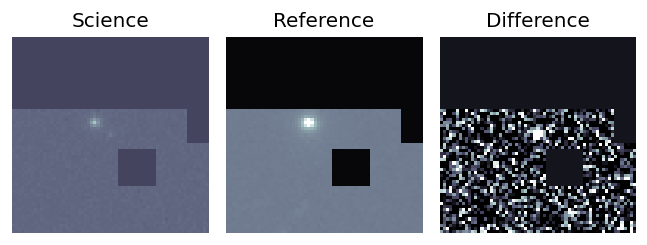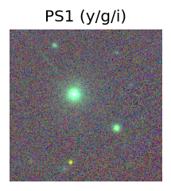 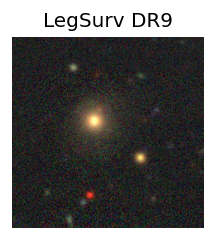 LegacySurvey: 1 sources in 3 arcsec Closest: d = 0.80 arcsec, 302.3 deg (east of north) photoz=0.61 (68% bounds 0.32, 1.05), type=REX peak abs mag = -22.83 (68% bounds -21.12, -24.27) Consistent with synchrotron, g-r>0!
14. ZTF25acixuyy (FBOT?) [Back to Top] [Share] [Trigger Swift] [Fritz ] [Lasair ]RA, Dec: 27.31108, -21.96331 1h49m14.66s, -21d-57m-47.91sGalactic (l, b): 194.61011, -75.88851 ext(g-r) = 0.014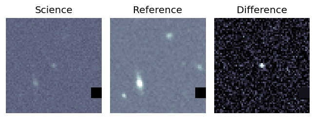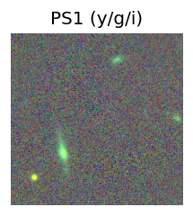 LegacySurvey: 1 sources in 3 arcsec Closest: d = 1.39 arcsec, 186.4 deg (east of north) photoz=0.51 (68% bounds 0.43, 0.59), type=REX peak abs mag = -22.84 (68% bounds -22.42, -23.2)
15. ZTF25acixvmg (FBOT?) [Back to Top] [Share] [Trigger Swift] [Fritz ] [Lasair ]RA, Dec: 343.64637, -17.31279 22h54m35.13s, -17d-18m-46.04sGalactic (l, b): 46.80832, -61.31755 ext(g-r) = 0.042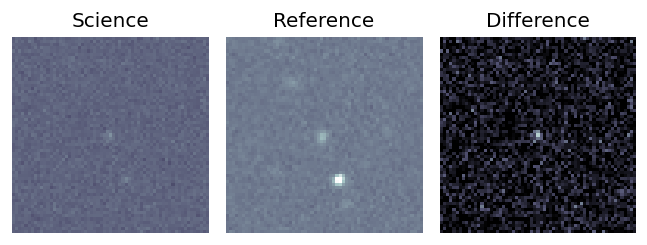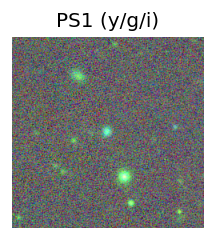 PS1: 1 source in 3 arcsec Closest: d = 0.75 arcsec photoz=0.25+/-0.13 peak abs mag = -21.08 Consistent with synchrotron, g-r>0!
16. ZTF25acizykh (Afterglow?) [Back to Top] [Share] [Trigger Swift] [Fritz ] [Lasair ]RA, Dec: 93.83208, 49.98791 6h15m19.70s, 49d59m16.46sGalactic (l, b): 164.04155, 15.03786 ext(g-r) = 0.163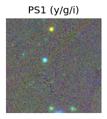 LegacySurvey: 1 sources in 3 arcsec Closest: d = 6.48 arcsec, 60.5 deg (east of north) photoz=0.05 (68% bounds 0.01, 0.16), type=PSF peak abs mag = -17.18 (68% bounds -14.29, -19.69)
17. ZTF25acjbenl (FBOT?) [Back to Top] [Share] [Trigger Swift] [Fritz ] [Lasair ]RA, Dec: 150.26136, 19.46617 10h 1m2.73s, 19d27m58.20sGalactic (l, b): 214.7165, 50.32206 ext(g-r) = 0.034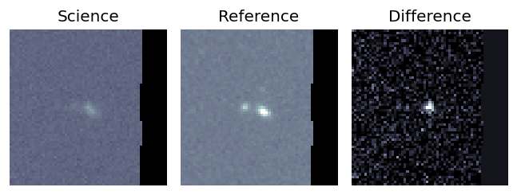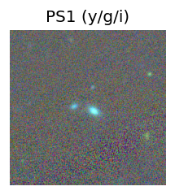 peak abs mag = -19.61 LegacySurvey: 1 sources in 3 arcsec Closest: d = 0.65 arcsec, 324.7 deg (east of north) photoz=0.61 (68% bounds 0.19, 1.11), type=PSF peak abs mag = -22.68 (68% bounds -19.8, -24.29)
18. ZTF25acjbgdi (Afterglow?) [Back to Top] [Share] [Trigger Swift] [Fritz ] [Lasair ]RA, Dec: 148.78308, 20.97023 9h55m7.94s, 20d58m12.84sGalactic (l, b): 211.81852, 49.48354 ext(g-r) = 0.034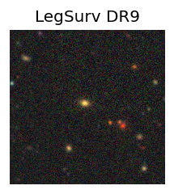 peak abs mag = -20.38 LegacySurvey: 1 sources in 3 arcsec Closest: d = 1.94 arcsec, 34.9 deg (east of north) photoz=0.25 (68% bounds 0.23, 0.27), type=DEV peak abs mag = -19.95 (68% bounds -19.78, -20.1)
19. ZTF25acjbkdc (Afterglow?) [Back to Top] [Share] [Trigger Swift] [Fritz ] [Lasair ]RA, Dec: 148.81605, 8.03934 9h55m15.85s, 8d 2m21.63sGalactic (l, b): 229.13869, 44.20427 WARNING: -4.34 deg from ecliptic plane ext(g-r) = 0.035LegacySurvey: 1 sources in 3 arcsec Closest: d = 0.26 arcsec, 239.7 deg (east of north) photoz=0.75 (68% bounds 0.63, 0.82), type=PSF peak abs mag = -22.74 (68% bounds -22.27, -22.97) Consistent with synchrotron, g-r>0!
20. ZTF25acjbnkq (Afterglow?) [Back to Top] [Share] [Trigger Swift] [Fritz ] [Lasair ]RA, Dec: 184.14787, 44.46725 12h16m35.49s, 44d28m2.09sGalactic (l, b): 142.6383, 71.30365 ext(g-r) = 0.014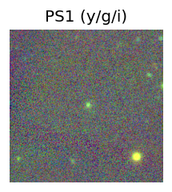 peak abs mag = -21.22 LegacySurvey: 1 sources in 3 arcsec Closest: d = 0.49 arcsec, 248.0 deg (east of north) photoz=0.46 (68% bounds 0.4, 0.51), type=REX peak abs mag = -21.45 (68% bounds -21.1, -21.69)
21. ZTF25acjbszv (Afterglow?) [Back to Top] [Share] [Trigger Swift] [Fritz ] [Lasair ]RA, Dec: 195.3822, 56.11252 13h 1m31.73s, 56d 6m45.06sGalactic (l, b): 120.03408, 60.95892 ext(g-r) = 0.016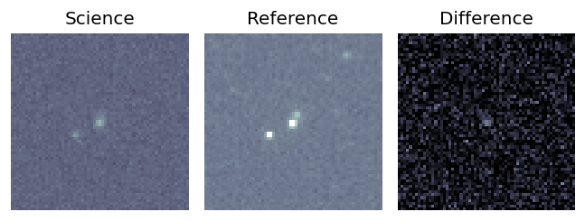LegacySurvey: 1 sources in 3 arcsec Closest: d = 0.51 arcsec, 174.7 deg (east of north) photoz=0.28 (68% bounds 0.14, 0.99), type=PSF peak abs mag = -20.07 (68% bounds -18.43, -23.32) Consistent with synchrotron, g-r>0!
22. ZTF25acjbtno (Afterglow?) [Back to Top] [Share] [Trigger Swift] [Fritz ] [Lasair ]RA, Dec: 188.67964, 51.54564 12h34m43.11s, 51d32m44.30sGalactic (l, b): 129.1782, 65.37936 ext(g-r) = 0.02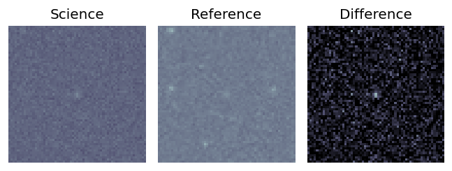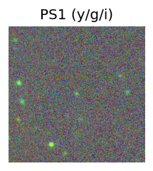 LegacySurvey: 1 sources in 3 arcsec Closest: d = 0.18 arcsec, 102.2 deg (east of north) photoz=0.96 (68% bounds 0.87, 1.05), type=REX peak abs mag = -22.97 (68% bounds -22.71, -23.21) Consistent with synchrotron, g-r>0!
23. ZTF25acjbtwf (Afterglow?) [Back to Top] [Share] [Trigger Swift] [Fritz ] [Lasair ]RA, Dec: 180.22788, 49.29253 12h 0m54.69s, 49d17m33.12sGalactic (l, b): 143.28523, 65.79118 ext(g-r) = 0.028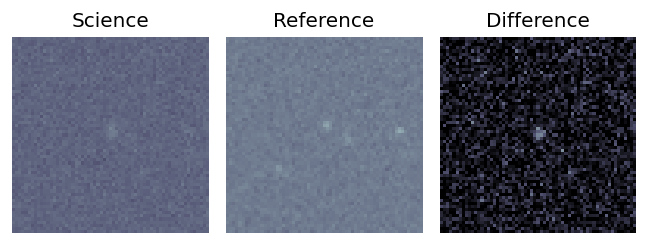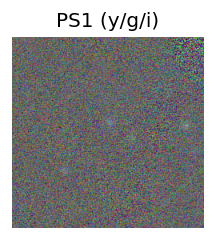 peak abs mag = -19.94 LegacySurvey: 1 sources in 3 arcsec Closest: d = 2.83 arcsec, 349.9 deg (east of north) photoz=0.3 (68% bounds 0.23, 0.43), type=REX peak abs mag = -20.33 (68% bounds -19.67, -21.18) Consistent with synchrotron, g-r>0!
24. ZTF25acjbugs (Afterglow?) [Back to Top] [Share] [Trigger Swift] [Fritz ] [Lasair ]RA, Dec: 161.12436, 24.88176 10h44m29.85s, 24d52m54.35sGalactic (l, b): 210.21452, 61.46429 ext(g-r) = 0.029LegacySurvey: 1 sources in 3 arcsec Closest: d = 0.26 arcsec, 194.4 deg (east of north) photoz=0.52 (68% bounds 0.24, 1.02), type=REX peak abs mag = -21.97 (68% bounds -19.96, -23.74)
25. ZTF25acjbvlw (Afterglow?) [Back to Top] [Share] [Trigger Swift] [Fritz ] [Lasair ]RA, Dec: 163.05787, 36.96115 10h52m13.89s, 36d57m40.13sGalactic (l, b): 184.0611, 63.03238 ext(g-r) = 0.015LegacySurvey: 1 sources in 3 arcsec Closest: d = 0.42 arcsec, 228.7 deg (east of north) photoz=0.99 (68% bounds 0.74, 1.23), type=REX peak abs mag = -23.23 (68% bounds -22.45, -23.83) Consistent with synchrotron, g-r>0!
26. ZTF25acjbzpk (Afterglow?) [Back to Top] [Share] [Trigger Swift] [Fritz ] [Lasair ]RA, Dec: 161.72886, 40.07523 10h46m54.93s, 40d 4m30.84sGalactic (l, b): 178.19577, 61.22359 ext(g-r) = 0.014peak abs mag = -17.81 LegacySurvey: 1 sources in 3 arcsec Closest: d = 0.32 arcsec, 356.7 deg (east of north) photoz=0.13 (68% bounds 0.11, 0.16), type=REX peak abs mag = -18.07 (68% bounds -17.69, -18.52) Consistent with synchrotron, g-r>0!
27. ZTF25acjbzvk (Afterglow?) [Back to Top] [Share] [Trigger Swift] [Fritz ] [Lasair ]RA, Dec: 184.09067, 56.31252 12h16m21.76s, 56d18m45.06sGalactic (l, b): 132.7115, 60.14478 ext(g-r) = 0.013LegacySurvey: 1 sources in 3 arcsec Closest: d = 0.15 arcsec, 2.5 deg (east of north) photoz=0.87 (68% bounds 0.68, 1.07), type=REX peak abs mag = -22.92 (68% bounds -22.26, -23.49)
28. ZTF25acjcaas (Afterglow?) [Back to Top] [Share] [Trigger Swift] [Fritz ] [Lasair ]RA, Dec: 180.73629, 55.34562 12h 2m56.71s, 55d20m44.24sGalactic (l, b): 136.94216, 60.444 ext(g-r) = 0.014LegacySurvey: 1 sources in 3 arcsec Closest: d = 0.22 arcsec, 255.1 deg (east of north) photoz=0.67 (68% bounds 0.59, 0.76), type=REX peak abs mag = -22.03 (68% bounds -21.68, -22.34) Consistent with synchrotron, g-r>0!
29. ZTF25acjcabs (Afterglow?) [Back to Top] [Share] [Trigger Swift] [Fritz ] [Lasair ]RA, Dec: 141.48994, 2.93709 9h25m57.58s, 2d56m13.53sGalactic (l, b): 229.9435, 35.32752 ext(g-r) = 0.048peak abs mag = -19.94 LegacySurvey: 1 sources in 3 arcsec Closest: d = 0.74 arcsec, 230.8 deg (east of north) photoz=0.25 (68% bounds 0.21, 0.28), type=SER peak abs mag = -20.04 (68% bounds -19.59, -20.26)
30. ZTF25acjcadv (Afterglow?) [Back to Top] [Share] [Trigger Swift] [Fritz ] [Lasair ]RA, Dec: 186.07785, 58.25899 12h24m18.68s, 58d15m32.36sGalactic (l, b): 129.76184, 58.5081 ext(g-r) = 0.011peak abs mag = -21.12 LegacySurvey: 1 sources in 3 arcsec Closest: d = 0.33 arcsec, 313.0 deg (east of north) photoz=0.3 (68% bounds 0.23, 0.36), type=REX peak abs mag = -20.62 (68% bounds -19.99, -21.07) Consistent with synchrotron, g-r>0!
31. ZTF25acjcagv (Afterglow?) [Back to Top] [Share] [Trigger Swift] [Fritz ] [Lasair ]RA, Dec: 174.28987, 58.08461 11h37m9.57s, 58d 5m4.61sGalactic (l, b): 140.65074, 56.41474 ext(g-r) = 0.012peak abs mag = -21.97 LegacySurvey: 1 sources in 3 arcsec Closest: d = 0.30 arcsec, 193.4 deg (east of north) photoz=0.96 (68% bounds 0.81, 1.13), type=DEV peak abs mag = -23.57 (68% bounds -23.11, -24.01) Consistent with synchrotron, g-r>0!
32. ZTF25acjcdbz (Afterglow?) [Back to Top] [Share] [Trigger Swift] [Fritz ] [Lasair ]RA, Dec: 186.83081, 54.3596 12h27m19.39s, 54d21m34.55sGalactic (l, b): 130.52548, 62.41169 ext(g-r) = 0.018peak abs mag = -21.72 LegacySurvey: 1 sources in 3 arcsec Closest: d = 0.15 arcsec, 262.0 deg (east of north) photoz=0.66 (68% bounds 0.37, 1.04), type=PSF peak abs mag = -22.01 (68% bounds -20.5, -23.22) Consistent with synchrotron, g-r>0!
33. ZTF25acjcdhz (Afterglow?) [Back to Top] [Share] [Trigger Swift] [Fritz ] [Lasair ]RA, Dec: 199.19927, 64.54504 13h16m47.82s, 64d32m42.13sGalactic (l, b): 118.47435, 52.36318 ext(g-r) = 0.021peak abs mag = -20.93 LegacySurvey: 1 sources in 3 arcsec Closest: d = 0.88 arcsec, 49.1 deg (east of north) photoz=0.3 (68% bounds 0.23, 0.66), type=EXP peak abs mag = -20.42 (68% bounds -19.77, -22.44) Consistent with synchrotron, g-r>0!
34. ZTF25acjcdlz (Afterglow?) [Back to Top] [Share] [Trigger Swift] [Fritz ] [Lasair ]RA, Dec: 174.56943, 37.44169 11h38m16.66s, 37d26m30.09sGalactic (l, b): 174.5555, 71.46764 ext(g-r) = 0.023peak abs mag = -18.27 LegacySurvey: 1 sources in 3 arcsec Closest: d = 1.06 arcsec, 73.1 deg (east of north) photoz=0.12 (68% bounds 0.1, 0.15), type=SER peak abs mag = -18.08 (68% bounds -17.68, -18.59)
35. ZTF25acjcecp (Afterglow?) [Back to Top] [Share] [Trigger Swift] [Fritz ] [Lasair ]RA, Dec: 186.74945, 48.75944 12h26m59.87s, 48d45m34.00sGalactic (l, b): 133.66034, 67.85656 ext(g-r) = 0.017LegacySurvey: 1 sources in 3 arcsec Closest: d = 0.37 arcsec, 151.0 deg (east of north) photoz=0.86 (68% bounds 0.75, 1.09), type=REX peak abs mag = -22.49 (68% bounds -22.12, -23.12)
36. ZTF25acjcozc (Afterglow?) [Back to Top] [Share] [Trigger Swift] [Fritz ] [Lasair ]RA, Dec: 163.47972, 40.14541 10h53m55.13s, 40d 8m43.47sGalactic (l, b): 177.17202, 62.4745 ext(g-r) = 0.013
37. ZTF25acjcszw (Afterglow?) [Back to Top] [Share] [Trigger Swift] [Fritz ] [Lasair ]RA, Dec: 162.59959, 21.56227 10h50m23.90s, 21d33m44.17sGalactic (l, b): 217.71457, 61.94653 ext(g-r) = 0.026peak abs mag = -20.96 LegacySurvey: 1 sources in 3 arcsec Closest: d = 4.84 arcsec, 17.9 deg (east of north) photoz=0.79 (68% bounds 0.72, 0.87), type=REX peak abs mag = -22.59 (68% bounds -22.32, -22.81)
38. ZTF25acjcxva (Afterglow?) [Back to Top] [Share] [Trigger Swift] [Fritz ] [Lasair ]RA, Dec: 186.60016, 48.93744 12h26m24.04s, 48d56m14.77sGalactic (l, b): 133.7923, 67.65948 ext(g-r) = 0.016peak abs mag = -21.81 LegacySurvey: 1 sources in 3 arcsec Closest: d = 6.66 arcsec, 347.9 deg (east of north) photoz=0.81 (68% bounds 0.46, 1.08), type=REX peak abs mag = -22.57 (68% bounds -21.09, -23.34)
39. ZTF25acjdecy (Afterglow?) [Back to Top] [Share] [Trigger Swift] [Fritz ] [Lasair ]RA, Dec: 230.91981, 55.04731 15h23m40.75s, 55d 2m50.32sGalactic (l, b): 88.93952, 50.82239 ext(g-r) = 0.013peak abs mag = -19.84 LegacySurvey: 1 sources in 3 arcsec Closest: d = 4.35 arcsec, 178.2 deg (east of north) photoz=0.56 (68% bounds 0.43, 0.8), type=PSF peak abs mag = -22.88 (68% bounds -22.19, -23.8) Consistent with synchrotron, g-r>0!
40. ZTF25acjdzdq (FBOT?) [Back to Top] [Share] [Trigger Swift] [Fritz ] [Lasair ]RA, Dec: 207.45524, 15.15778 13h49m49.26s, 15d 9m28.01sGalactic (l, b): 354.47096, 71.903 ext(g-r) = 0.028LegacySurvey: 1 sources in 3 arcsec Closest: d = 0.77 arcsec, 350.5 deg (east of north) photoz=0.59 (68% bounds 0.36, 0.78), type=SER peak abs mag = -22.87 (68% bounds -21.57, -23.62) Consistent with synchrotron, g-r>0!
41. ZTF25acjedes (FBOT?) [Back to Top] [Share] [Trigger Swift] [Fritz ] [Lasair ]RA, Dec: 175.42477, 21.36055 11h41m41.95s, 21d21m37.99sGalactic (l, b): 229.11647, 73.109 ext(g-r) = 0.023peak abs mag = -22.55 LegacySurvey: 1 sources in 3 arcsec Closest: d = 1.48 arcsec, 221.1 deg (east of north) photoz=0.34 (68% bounds 0.17, 0.66), type=REX peak abs mag = -22.12 (68% bounds -20.51, -23.86) 


 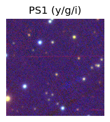
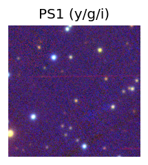


 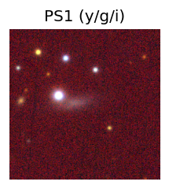
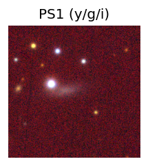
 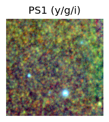
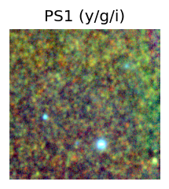


 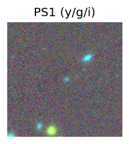
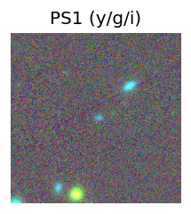


 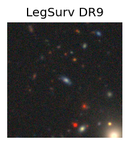
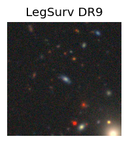 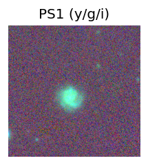
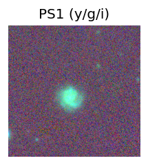


 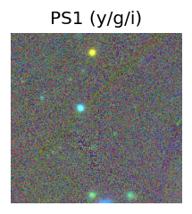
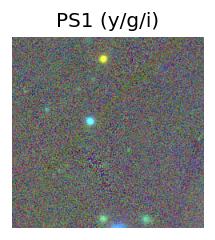


 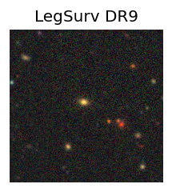
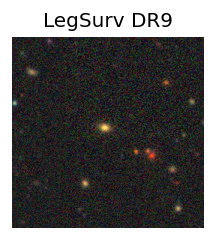


 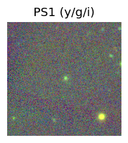
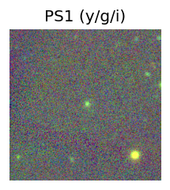